Functions | |
| def | create_help_message (level, food_count) |
| tuple[int, int] | get_position (index, total_cells) |
| def | search_closest_resource (client, needed_resources) |
| def | get_action (client, needed_resources) |
| def | get_resources (client, needed_resources) |
| def | analyze_vision (client) |
| def | define_needed_resources (client) |
| def | verify_incantation (client, current_cell, needed_resources) |
| def | setting_up_incantation (client, current_cell) |
| def | get_action_from_broadcast (client, direction) |
| def | strategy (client) |
Detailed Description
@file ml_agent.py @brief Machine Learning Agent for Zappy AI @author Epitech Project 2025 @date 2025 This module implements a machine learning agent for the Zappy AI game.
Function Documentation
◆ analyze_vision()
| def ml_agent.analyze_vision | ( | client | ) |
@brief Analyzes the client's vision data to categorize cells @param client: The ZappyClient object containing the client's state @return: A dictionary with the total number of cells, food cells, and resource cells @details This function processes the client's last look at the game world, categorizing each cell into food or resources. It creates a dictionary that contains the total number of cells, a list of food cells, and a list of resource cells. Each cell is represented by its index, x and y coordinates, and its content. The function iterates through the vision data, calculates the (x, y) position of each cell using the `get_position` function, and checks if the cell contains food or resources. The results are stored in a dictionary that is returned at the end.
Definition at line 205 of file ml_agent.py.
205def analyze_vision(client):
206 """
207 @brief Analyzes the client's vision data to categorize cells
208 @param client: The ZappyClient object containing the client's state
209 @return: A dictionary with the total number of cells, food cells, and resource cells
210
211 @details This function processes the client's last look at the game world,
212 categorizing each cell into food or resources. It creates a dictionary that
213 contains the total number of cells, a list of food cells, and a list of resource cells.
214 Each cell is represented by its index, x and y coordinates, and its content.
215 The function iterates through the vision data, calculates the (x, y) position of each cell
216 using the `get_position` function, and checks if the cell contains food or resources.
217 The results are stored in a dictionary that is returned at the end.
218 """
219
220 vision_data = client.last_look
221 analyzed_vision = {
222 'total_cells': len(vision_data),
223 'food': [],
224 'resources': []
225 }
226
227 for index, cell in enumerate(vision_data):
228 x, y = get_position(index, len(vision_data))
229
230 cell_info = {
231 'index': index,
232 'x': x,
233 'y': y,
234 'content': cell
235 }
236
237 if 'food' in cell_info['content']:
238 analyzed_vision['food'].append(cell_info)
239 else:
240 analyzed_vision['resources'].append(cell_info)
241
242 return analyzed_vision
243
244
Here is the call graph for this function:
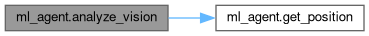
Here is the caller graph for this function:
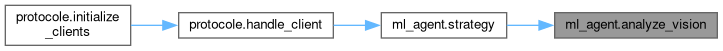
◆ create_help_message()
| def ml_agent.create_help_message | ( | level, | |
| food_count | |||
| ) |
@brief Creates a help message for incantation assistance @param level: The current level of the player @param food_count: The amount of food the player has @return: A formatted help message string @details This function generates a message that can be broadcasted to other players to request assistance for an incantation. The message includes the player's current level and the amount of food they have. The message format is standardized for easy recognition.
Definition at line 16 of file ml_agent.py.
16def create_help_message(level, food_count):
17 """
18 @brief Creates a help message for incantation assistance
19 @param level: The current level of the player
20 @param food_count: The amount of food the player has
21 @return: A formatted help message string
22
23 @details This function generates a message that can be broadcasted to other players
24 to request assistance for an incantation. The message includes the player's current level
25 and the amount of food they have. The message format is standardized for easy recognition.
26 """
27
28 return f"I_need_help_to_level_up_to_{level + 1}_with_{food_count}"
29
30
Here is the caller graph for this function:
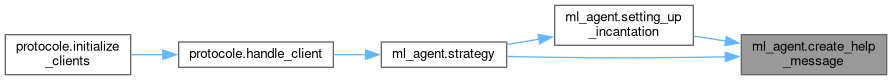
◆ define_needed_resources()
| def ml_agent.define_needed_resources | ( | client | ) |
@brief Defines the resources needed for the client's current level @param client: The ZappyClient object containing the client's state @return: A dictionary of resources needed by the client @details This function checks the client's current level and returns a dictionary containing the resources needed for that level. The resources are defined in a predefined dictionary that maps levels to their required resources.
Definition at line 245 of file ml_agent.py.
245def define_needed_resources(client):
246 """
247 @brief Defines the resources needed for the client's current level
248 @param client: The ZappyClient object containing the client's state
249 @return: A dictionary of resources needed by the client
250
251 @details This function checks the client's current level and returns a dictionary
252 containing the resources needed for that level. The resources are defined in a
253 predefined dictionary that maps levels to their required resources.
254 """
255
256 needed = client.needed_resources
257 inventory = client.inventory
258 missing_resources = {}
259
260 valid_resources = ["linemate", "deraumere", "sibur", "mendiane", "phiras", "thystame"]
261
262 for resource, quantity in needed.items():
263 if inventory.get(resource, 0) < quantity and resource in valid_resources:
264 missing_resources[resource] = quantity - inventory.get(resource, 0)
265
266 return missing_resources
267
268
Here is the caller graph for this function:
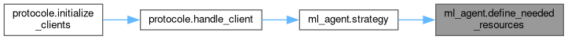
◆ get_action()
| def ml_agent.get_action | ( | client, | |
| needed_resources | |||
| ) |
@brief Determines the next action for the client based on needed resources @param client: The ZappyClient object containing the client's state @param needed_resources: A dictionary of resources needed by the client @return: A tuple containing the action to take and the resource name if applicable @details This function decides the next action for the client based on the resources it needs. It first searches for the closest resource that matches the needed resources. If no resources are found, it checks if the client has reached the maximum number of consecutive turns without finding a resource. If so, it resets the turn count and sets the action to move forward. If the client has a last target direction, it checks if the distance to that target is zero and decides to turn left or right accordingly. If a resource is found, it checks the coordinates of the resource and decides whether to move forward, turn left, or turn right based on the resource's position relative to the client. If the resource is at the center (0, 0), it sets the action to take the resource. If the resource is directly in front (0, y > 0), it moves forward. If the resource is to the right or left, it updates the last target direction and sets the action to move forward. If the resource is to the right (x > 0) or left (x < 0), it updates the last target direction and sets the action to move forward, while also updating the distance to the target. If the client has not reached the maximum consecutive turns, it increments the turn count and decides to turn left or right randomly.
Definition at line 98 of file ml_agent.py.
98def get_action(client, needed_resources):
99 """
100 @brief Determines the next action for the client based on needed resources
101 @param client: The ZappyClient object containing the client's state
102 @param needed_resources: A dictionary of resources needed by the client
103 @return: A tuple containing the action to take and the resource name if applicable
104
105 @details This function decides the next action for the client based on the resources
106 it needs. It first searches for the closest resource that matches the needed resources.
107 If no resources are found, it checks if the client has reached the maximum number of
108 consecutive turns without finding a resource. If so, it resets the turn count and
109 sets the action to move forward. If the client has a last target direction, it checks
110 if the distance to that target is zero and decides to turn left or right accordingly.
111 If a resource is found, it checks the coordinates of the resource and decides whether
112 to move forward, turn left, or turn right based on the resource's position relative to the client.
113 If the resource is at the center (0, 0), it sets the action to take the resource.
114 If the resource is directly in front (0, y > 0), it moves forward. If the resource is to the right or left,
115 it updates the last target direction and sets the action to move forward.
116 If the resource is to the right (x > 0) or left (x < 0), it updates the last target direction and sets
117 the action to move forward, while also updating the distance to the target.
118 If the client has not reached the maximum consecutive turns, it increments the turn count and decides
119 to turn left or right randomly.
120 """
121
122 closest_resources = search_closest_resource(client, needed_resources)
123
124 if closest_resources is None:
125 if client.move["consecutive_turns"] >= utils.MAX_CONSECUTIVE_TURNS:
126 client.move["consecutive_turns"] = 0
127 client.move["forward"] = True
128 return utils.FORWARD, None
129 else:
130 if random.random() < 0.5:
131 client.move["consecutive_turns"] += 1
132 return utils.RIGHT, None
133 else:
134 client.move["consecutive_turns"] += 1
135 return utils.LEFT, None
136
137 x, y = closest_resources["x"], closest_resources["y"]
138 resources_name = closest_resources["resource_name"]
139
140 if x == 0 and y == 0:
141 client.move["consecutive_turns"] = 0
142 client.move["forward"] = False
143 client.move["distance_to_target"] = utils.NO_TARGET
144 client.move["last_target"] = None
145 return utils.TAKE, resources_name
146
147 if x == 0 and y > 0:
148 client.move["consecutive_turns"] = 0
149 client.move["forward"] = True
150 return utils.FORWARD, None
151
152 if client.move["last_target"] == "right" and client.move["distance_to_target"] == 0:
153 client.move["consecutive_turns"] += 1
154 client.move["distance_to_target"] = utils.NO_TARGET
155 return utils.RIGHT, None
156
157 if client.move["last_target"] == "left" and client.move["distance_to_target"] == 0:
158 client.move["consecutive_turns"] += 1
159 client.move["distance_to_target"] = utils.NO_TARGET
160 return utils.LEFT, None
161
162 if client.move["consecutive_turns"] >= utils.MAX_CONSECUTIVE_TURNS:
163 client.move["consecutive_turns"] = 0
164 client.move["forward"] = True
165 return utils.FORWARD, None
166
167 if x > 0:
168 client.move["last_target"] = "right"
169 client.move["forward"] = True
170 client.move["distance_to_target"] = y - 1
171 return utils.FORWARD, None
172
173 if x < 0:
174 client.move["last_target"] = "left"
175 client.move["forward"] = True
176 client.move["distance_to_target"] = y - 1
177 return utils.FORWARD, None
178
179 client.move["consecutive_turns"] = 0
180 client.move["forward"] = True
181 return None, None
182
183
Here is the call graph for this function:
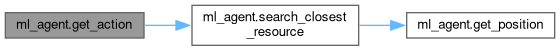
Here is the caller graph for this function:
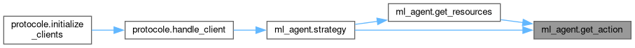
◆ get_action_from_broadcast()
| def ml_agent.get_action_from_broadcast | ( | client, | |
| direction | |||
| ) |
@brief Executes the action based on the direction received from a broadcast @param client: The ZappyClient object containing the client's state @param direction: The direction to move based on the broadcast @return: None @details This function interprets the direction received from a broadcast message and executes the corresponding actions. It uses a predefined mapping of directions to actions, where each direction corresponds to a list of actions to be executed. The function checks the direction and executes the actions in the order specified in the mapping. If the direction is not recognized, it defaults to an empty action list. The actions include moving forward, turning left, or turning right.
Definition at line 346 of file ml_agent.py.
346def get_action_from_broadcast(client, direction):
347 """
348 @brief Executes the action based on the direction received from a broadcast
349 @param client: The ZappyClient object containing the client's state
350 @param direction: The direction to move based on the broadcast
351 @return: None
352
353 @details This function interprets the direction received from a broadcast message
354 and executes the corresponding actions. It uses a predefined mapping of directions
355 to actions, where each direction corresponds to a list of actions to be executed.
356 The function checks the direction and executes the actions in the order specified
357 in the mapping. If the direction is not recognized, it defaults to an empty action list.
358 The actions include moving forward, turning left, or turning right.
359 """
360
361 direction_actions = {
362 0: [],
363 1: [utils.FORWARD],
364 2: [utils.FORWARD, utils.LEFT],
365 3: [utils.LEFT, utils.FORWARD],
366 4: [utils.LEFT, utils.FORWARD, utils.LEFT],
367 5: [utils.LEFT, utils.LEFT, utils.FORWARD],
368 6: [utils.RIGHT, utils.FORWARD, utils.RIGHT],
369 7: [utils.RIGHT, utils.FORWARD],
370 8: [utils.FORWARD, utils.RIGHT],
371 }
372
373 actions = direction_actions.get(direction, [])
374
375 for action in actions:
377
378 client.help_direction = 0
379
Here is the call graph for this function:
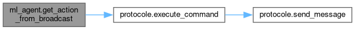
Here is the caller graph for this function:
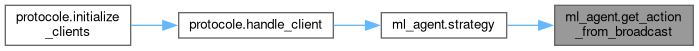
◆ get_position()
| tuple[int, int] ml_agent.get_position | ( | index, | |
| total_cells | |||
| ) |
@brief Calculates the (x, y) position in a spiral grid based on the index @param index: The index of the cell in the spiral grid @param total_cells: The total number of cells in the spiral grid @return: A tuple (x, y) representing the position in the grid @details This function computes the (x, y) coordinates of a cell in a spiral grid based on its index. The grid is structured such that the center cell is (0, 0), and the cells are arranged in concentric squares. The function iterates through the spiral layers until it finds the correct position for the given index. If the index is 0, it returns (0, 0) as the center of the grid.
Definition at line 31 of file ml_agent.py.
31def get_position(index, total_cells) -> tuple[int, int]:
32 """
33 @brief Calculates the (x, y) position in a spiral grid based on the index
34 @param index: The index of the cell in the spiral grid
35 @param total_cells: The total number of cells in the spiral grid
36 @return: A tuple (x, y) representing the position in the grid
37
38 @details This function computes the (x, y) coordinates of a cell in a spiral grid
39 based on its index. The grid is structured such that the center cell is (0, 0),
40 and the cells are arranged in concentric squares. The function iterates through
41 the spiral layers until it finds the correct position for the given index.
42 If the index is 0, it returns (0, 0) as the center of the grid.
43 """
44 if index == 0:
45 return (0, 0)
46
47 current_index = 1
48 distance = 1
49
50 while current_index < total_cells:
51 line = distance * 2 + 1
52 if current_index + line > index:
53 x = index - current_index - distance
54 y = distance
55 return (x, y)
56 current_index += line
57 distance += 1
58 return (0, 0)
59
60
Here is the caller graph for this function:
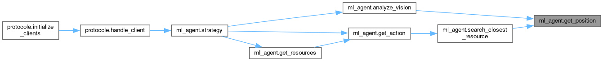
◆ get_resources()
| def ml_agent.get_resources | ( | client, | |
| needed_resources | |||
| ) |
@brief Executes the action to get resources based on the client's state @param client: The ZappyClient object containing the client's state @param needed_resources: A dictionary of resources needed by the client @return: None @details This function handle the action to take resources based on the client's state. If the action is to take a resource, it executes the command to take that resource. If the action is to move forward, it executes the command to move forward. If the action is to turn left or right, it executes the corresponding command.
Definition at line 184 of file ml_agent.py.
184def get_resources(client, needed_resources):
185 """
186 @brief Executes the action to get resources based on the client's state
187 @param client: The ZappyClient object containing the client's state
188 @param needed_resources: A dictionary of resources needed by the client
189 @return: None
190
191 @details This function handle the action to take resources based on the client's state.
192 If the action is to take a resource, it executes the command to take that resource.
193 If the action is to move forward, it executes the command to move forward.
194 If the action is to turn left or right, it executes the corresponding command.
195 """
196
197 action, arg = get_action(client, needed_resources)
198
199 if action == utils.TAKE:
200 protocole.execute_command(client, action, arg)
201 else:
203
204
Here is the call graph for this function:

Here is the caller graph for this function:
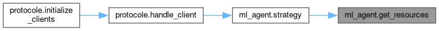
◆ search_closest_resource()
| def ml_agent.search_closest_resource | ( | client, | |
| needed_resources | |||
| ) |
@brief Searches for the closest resource in the client's vision data @param client: The ZappyClient object containing the client's state @param needed_resources: A dictionary of resources needed by the client @return: A dictionary with the closest resource's position and name, or None if no resources are found @details This function scans the client's vision data for resources that match the names in the `needed_resources` dictionary. It calculates the distance of each resource from the center of the vision grid (0, 0) and keeps track of the closest resource found. The distance is calculated using the Euclidean formula. If a resource is found, it returns a dictionary containing the x and y coordinates of the resource and its name. If no resources are found, it returns None.
Definition at line 61 of file ml_agent.py.
61def search_closest_resource(client, needed_resources):
62 """
63 @brief Searches for the closest resource in the client's vision data
64 @param client: The ZappyClient object containing the client's state
65 @param needed_resources: A dictionary of resources needed by the client
66 @return: A dictionary with the closest resource's position and name, or None if no resources are found
67
68 @details This function scans the client's vision data for resources that match
69 the names in the `needed_resources` dictionary. It calculates the distance of each
70 resource from the center of the vision grid (0, 0) and keeps track of the closest
71 resource found. The distance is calculated using the Euclidean formula.
72 If a resource is found, it returns a dictionary containing the x and y coordinates
73 of the resource and its name. If no resources are found, it returns None.
74 """
75
76 vision_data = client.last_look
77 closest_resource = None
78 min_distance = float('inf')
79
80 for index, cell in enumerate(vision_data):
81 for resource_name in needed_resources.keys():
82 if resource_name in cell.lower():
83 x, y = get_position(index, len(vision_data))
84 distance = math.sqrt(x * x + y * y)
85
86 if distance < min_distance:
87 min_distance = distance
88 closest_resource = {
89 'x': x,
90 'y': y,
91 'resource_name': resource_name,
92 }
93 break
94
95 return closest_resource
96
97
Here is the call graph for this function:
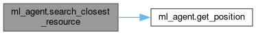
Here is the caller graph for this function:
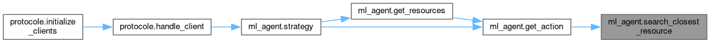
◆ setting_up_incantation()
| def ml_agent.setting_up_incantation | ( | client, | |
| current_cell | |||
| ) |
@brief Sets up the incantation for the client based on current cell resources @param client: The ZappyClient object containing the client's state @param current_cell: The current cell the client is in @return: True if the incantation can be performed, False otherwise @details This function checks if the current cell has the required resources for incantation and if the number of players is sufficient. It iterates through the valid resources and checks if the quantity in the current cell meets the client's needed resources. If any resource is present, it sets the resource in the client's inventory. If the current cell does not have enough resources or if the number of players is less than the required number, it returns False. If all conditions are met, it returns True, indicating that the incantation can be performed.
Definition at line 306 of file ml_agent.py.
306def setting_up_incantation(client, current_cell):
307 """
308 @brief Sets up the incantation for the client based on current cell resources
309 @param client: The ZappyClient object containing the client's state
310 @param current_cell: The current cell the client is in
311 @return: True if the incantation can be performed, False otherwise
312
313 @details This function checks if the current cell has the required resources for
314 incantation and if the number of players is sufficient. It iterates through
315 the valid resources and checks if the quantity in the current cell meets the
316 client's needed resources. If any resource is present, it sets the resource
317 in the client's inventory. If the current cell does not have enough resources
318 or if the number of players is less than the required number, it returns False.
319 If all conditions are met, it returns True, indicating that the incantation can be performed.
320 """
321
322 valid_resources = ["linemate", "deraumere", "sibur", "mendiane", "phiras", "thystame"]
323 count_players = current_cell.count("player")
324 required_players = utils.MAX_REQUIRED_PLAYERS
325
326 if client.level == 1:
327 required_players = utils.MIN_REQUIRED_PLAYERS
328
329 for resource in valid_resources:
330 quantity = client.inventory.get(resource, 0)
331
332 if quantity > 0:
333 protocole.execute_command(client, utils.SET, resource)
334
335 if current_cell.count(resource) < client.needed_resources.get(resource, 0):
336 return False
337
338 if count_players < required_players:
339 protocole.execute_command(client, utils.BROADCAST,
340 create_help_message(client.level, client.inventory.get("food", 0)))
341 return False
342
343 return True
344
345
Here is the call graph for this function:
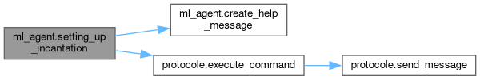
Here is the caller graph for this function:
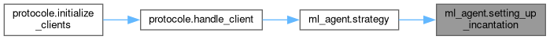
◆ strategy()
| def ml_agent.strategy | ( | client | ) |
@brief Main strategy function for the Zappy AI client @param client: The ZappyClient object containing the client's state @return: None @details This function implements the main strategy for the Zappy AI client. It analyzes the client's vision data, defines the needed resources based on the client's level, and manages the client's actions based on its current state. The function first checks if the client is ready to start playing. If not, it waits for the required number of players to start the game. If the client has enough food, it attempts to gather resources or move around the game world. If the client is in a critical state (low food), it prioritizes gathering food and resources. If the client is ready to incant, it verifies if the conditions are met for performing an incantation. If the client is waiting for help, it broadcasts a message to request assistance. If the client is not in a critical state, it checks if it needs to gather resources or food, and executes the appropriate actions based on the current cell's content.
Definition at line 380 of file ml_agent.py.
380def strategy(client):
381 """
382 @brief Main strategy function for the Zappy AI client
383 @param client: The ZappyClient object containing the client's state
384 @return: None
385
386 @details This function implements the main strategy for the Zappy AI client.
387 It analyzes the client's vision data, defines the needed resources based on the
388 client's level, and manages the client's actions based on its current state.
389 The function first checks if the client is ready to start playing. If not, it waits
390 for the required number of players to start the game. If the client has enough food,
391 it attempts to gather resources or move around the game world. If the client is in a
392 critical state (low food), it prioritizes gathering food and resources. If the client
393 is ready to incant, it verifies if the conditions are met for performing an incantation.
394 If the client is waiting for help, it broadcasts a message to request assistance.
395 If the client is not in a critical state, it checks if it needs to gather resources
396 or food, and executes the appropriate actions based on the current cell's content.
397 """
398
399 vision_data = analyze_vision(client)
400 needed = define_needed_resources(client)
401 food_count = client.inventory.get("food", 0)
402 current_cell = client.last_look[utils.PLAYER_CELL] if client.last_look else None
403
404 if not client.start_playing:
405 if client.player_in_game >= utils.NBR_PLAYERS_TO_START:
406 client.start_playing = True
408 return
409
410 if not client.at_max_food and food_count >= utils.MAX_FOOD:
411 client.at_max_food = True
412 client.player_in_game += 1
413 protocole.execute_command(client, utils.BROADCAST, utils.START_MESSAGE)
414
415 if vision_data["food"]:
416 get_resources(client, {"food": 1})
417 else:
418 client.move["consecutive_turns"] += 1
419 if client.move["consecutive_turns"] >= utils.MAX_CONSECUTIVE_TURNS:
420 client.move["consecutive_turns"] = 0
421 client.move["forward"] = True
423 else:
424 if random.random() < 0.5:
426 else:
429 return
430
431 if food_count < utils.CRITICAL_FOOD:
432 client.status = "critique"
433
434 if client.status == "critique":
435 if food_count > utils.GOOD_FOOD:
436 client.status = "good"
437
438 if client.status == "critique":
439 client.help_status = False
440 if vision_data["food"]:
441 get_resources(client, {"food": 1})
442 else:
443 client.move["consecutive_turns"] += 1
444 if client.move["consecutive_turns"] >= utils.MAX_CONSECUTIVE_TURNS:
445 client.move["consecutive_turns"] = 0
446 client.move["forward"] = True
448 else:
449 if random.random() < 0.5:
451 else:
454 return
455
456 if client.help_status:
457 get_action_from_broadcast(client, client.help_direction)
458 if "food" in current_cell.lower():
461 return
462
463 if not client.incantation:
464 verify_incantation(client, current_cell, needed)
465
466 if client.incantation:
467 if setting_up_incantation(client, current_cell):
470 return
471
472 if client.waiting_for_help:
473 if len(client.commands) > utils.MAX_COMMANDS - 1:
475 return
480 protocole.execute_command(client, utils.BROADCAST,
481 create_help_message(client.level, client.inventory.get("food")))
483 return
484
485 if needed and current_cell:
486 action, arg = get_action(client, needed)
487 if action == utils.TAKE and arg in current_cell.lower():
488 protocole.execute_command(client, action, arg)
490 return
491
492 if food_count < 20 and client.status == "good":
493 if "food" in current_cell.lower():
496 return
497
498 for resource, quantity in needed.items():
499 if resource in current_cell.lower():
500 get_resources(client, {resource: quantity})
502 return
503
504 if vision_data["food"]:
505 get_resources(client, {"food": 1})
506 else:
507 client.move["consecutive_turns"] += 1
508 if client.move["consecutive_turns"] >= utils.MAX_CONSECUTIVE_TURNS:
509 client.move["consecutive_turns"] = 0
510 client.move["forward"] = True
512 else:
513 if random.random() < 0.5:
515 else:
517
518 else:
519 if "food" in current_cell.lower():
522 return
523
524 if needed:
525 get_resources(client, needed)
526 else:
527 if vision_data["food"]:
528 get_resources(client, {"food": 1})
529 else:
530 if client.move["consecutive_turns"] >= utils.MAX_CONSECUTIVE_TURNS:
531 client.move["consecutive_turns"] = 0
532 client.move["forward"] = True
534 else:
535 if random.random() < 0.5:
536 client.move["consecutive_turns"] += 1
538 else:
540
Here is the call graph for this function:
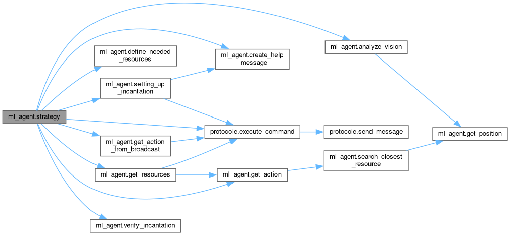
Here is the caller graph for this function:
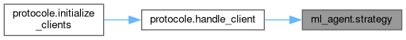
◆ verify_incantation()
| def ml_agent.verify_incantation | ( | client, | |
| current_cell, | |||
| needed_resources | |||
| ) |
@brief Verifies if the client can perform an incantation @param client: The ZappyClient object containing the client's state @param current_cell: The current cell the client is in @param needed_resources: A dictionary of resources needed by the client @return: None @details This function checks if the client can perform an incantation based on the resources available in the current cell and the number of players present. It first checks if the client has the required resources for incantation. If the client is at level 1, it sets the required number of players to the minimum. If the current cell does not have the needed resources or if the number of players is less than the required number, it sets the client's incantation status to False and waiting_for_help status to True. If the conditions are met, it sets the client's incantation status to True and waiting_for_help status to False.
Definition at line 269 of file ml_agent.py.
269def verify_incantation(client, current_cell, needed_resources):
270 """
271 @brief Verifies if the client can perform an incantation
272 @param client: The ZappyClient object containing the client's state
273 @param current_cell: The current cell the client is in
274 @param needed_resources: A dictionary of resources needed by the client
275 @return: None
276
277 @details This function checks if the client can perform an incantation based on
278 the resources available in the current cell and the number of players present.
279 It first checks if the client has the required resources for incantation.
280 If the client is at level 1, it sets the required number of players to the minimum.
281 If the current cell does not have the needed resources or if the number of players
282 is less than the required number, it sets the client's incantation status to False
283 and waiting_for_help status to True. If the conditions are met, it sets the
284 client's incantation status to True and waiting_for_help status to False.
285 """
286
287 required_players = utils.MAX_REQUIRED_PLAYERS
288 count_players = current_cell.count("player")
289
290 if client.level == 1:
291 required_players = utils.MIN_REQUIRED_PLAYERS
292
293 if needed_resources:
294 client.incantation = False
295 return
296
297 if count_players < required_players:
298 client.incantation = False
299 client.waiting_for_help = True
300 return
301
302 client.waiting_for_help = False
303 client.incantation = True
304
305
Here is the caller graph for this function:
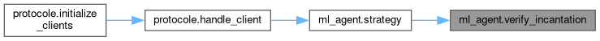